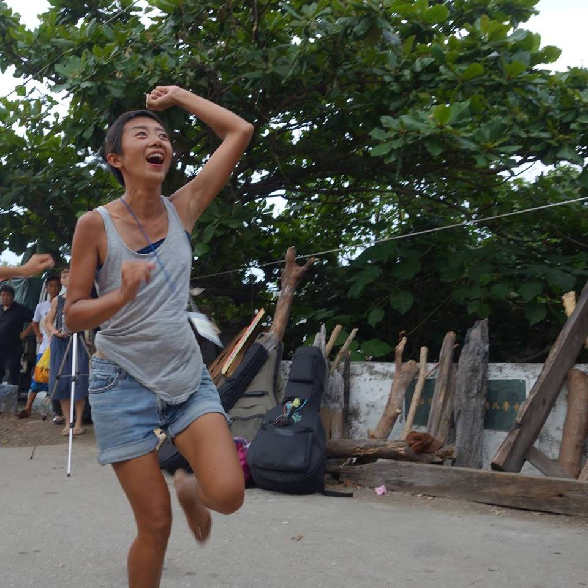

Displaced Standpoints
Curator│Showzoo Tsai
Artist│Yui Kao
Featuring│Kaya Hanasaki
Term│9/4 Sun. 19:30～21:00
◆Entry fee 300NT. Get refund if role switched. Income split by all models.
◆Photography is prohibited
◆Adults Only
Content: Motion Sketch & Physical Improvisation. We provide possibility for participants to swap roles, as a model or a painter.
Alter Angle: A figure drawing workshop
On contemporary body politics by shifting perspectives
You can be a painter
You can be a spectator
You can also change your role here
To the other side of gaze and into the mode of a model
Why is there an obligation to draw nude figures in every art training process? Legal pornographies occur in art workshops and studios. As we make the charging process transparent, marking the price for single perspective. If we provide the possibility for people to change their roles, our value exchange would be more equal: participants can become figure models themselves as exchange for the right to draw other’s figure.
In this era, which capital society still ripping off labors. Wage becomes more cheap, day after another. Youngsters now days expecting better pay, but they keep encounter obstacles in their career: longer hour or lower pay. People feel difficult to break out of this cycle and less time to do things contain creativities.
Decades passed, more and more young people feel no struggle participating in the career as a figure model. Being nude for others is considered sacrificing for art, but gradually, it becomes the manner of liberating body. This workshop is about the lack of subjectivity, and how models become subjects from objects under gaze.
Artist will initiate a figure drawing club with Neng Sheng Xing Factory crew. By combining art and laboring, what once being under gaze start consciously having reflection on relationship, between inequality and freedom, and two types of consuming.


Artist

│Kao Yu-IBorn in Tainan, member of Neng Sheng Xing Family. She live her life earnestly and chearish everybody for having them around N-Factory.